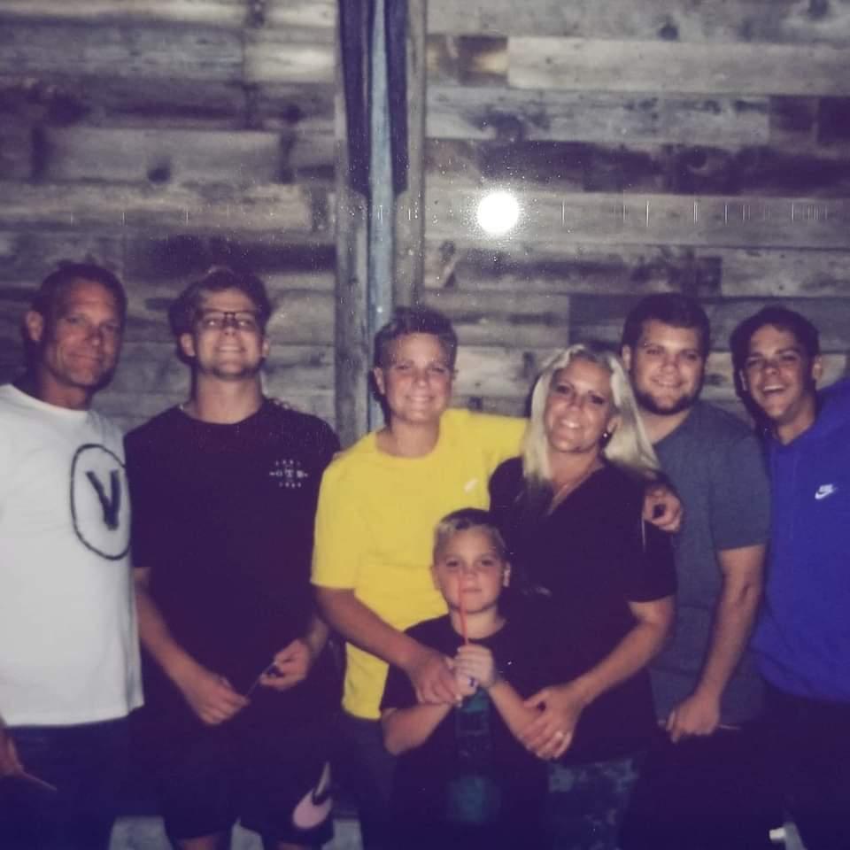

RESUME & EXPERIENCE
(Click Here For Official Resume)Mission Statement:
To promote good while also leaving my impression here through higher learning, good moral decisions, and becoming better everyday through adjusted habits. While in turn, giving back and also benefiting my community and those around me.Life Goals:
I wish to someday return to japan and rekindle relationships while gaining a further understanding of the enriched culture and learn more about myself. I want to one day have a family where it is centered around God and the blessings that it entails. Not having to worry about how I am going to one day provide for my future family.- Brigham Young University(Current)
- Utah Valley University (2 Years)
- University of Utah(1 Year)
- Provo High School (4 Years)
Education
Experience
Skills
- Capable in SQL Language, ERDs, and accessing Databases.
- Fluent in Japanese- speak, read, write & interpret.
- Very proficient at cooking and can make a variety of different recipes.
- Capable in interacting with flow charts
This paragraph is all about me! I love to exercise and train. I like being outdoors and connecting with nature, especially I am doing it with people I care about. I like to eat good food and spend quality time with the people I can closest to. I play video games and enjoy playing with my friends online. Please enjoy some pictures that tell about me!
I love playing football and any other kind of sport and recently attempted to walk-on as a BYU cougar.
Food has a special place in my heart. I love to cook it and prepare it. Especially japanese food and one of my favorite dishes is katsudon. Which is pictured above.
Most of all I love my family! I have four younger brothers and two very supporting, loving parents. We love to have BBQs and spend time together.